审查日期：2026-05-31 | 覆盖 6 类课件 · 59 个页面样本 · 12 张对比截图
| 排名 | 页面 | 评分 | 等级 |
|---|---|---|---|
| 1 | stories-index | 29 | 优秀 |
| 2 | village-v2 | 26 | 合格 |
| 3 | village | 25 | 合格 |
| 4 | pet-hub | 24 | 合格 |
| 5 | village-canvas | 21 | 待改进 |
| 6 | collection-hub | 15 | 需重做 |
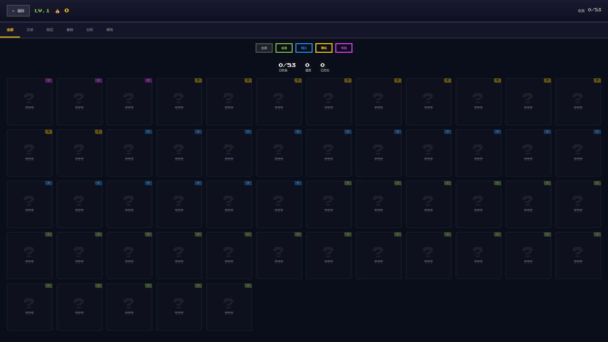
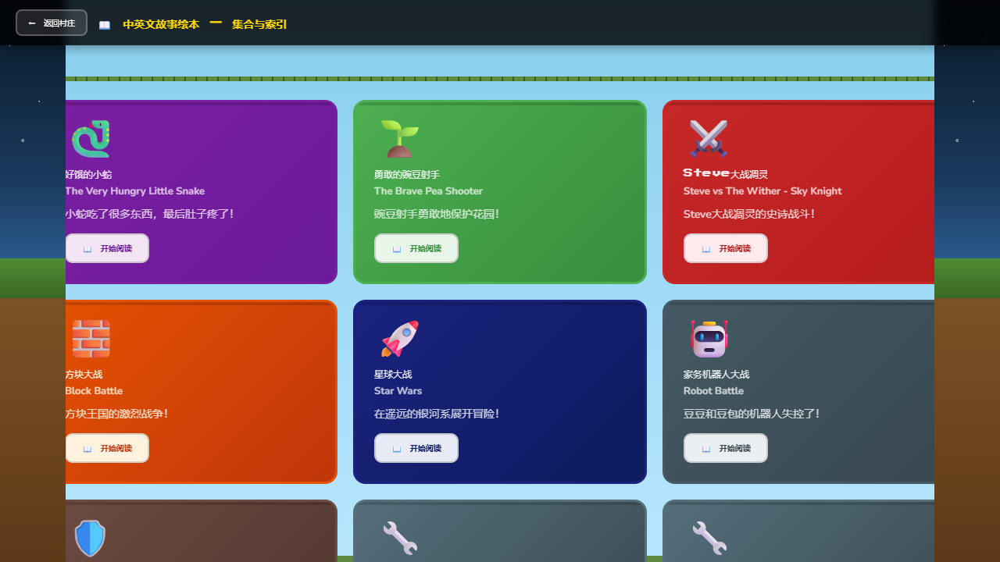
| 排名 | 页面 | 评分 | 等级 |
|---|---|---|---|
| 1 | english-21 | 30 | 满分 |
| 2 | english-23 | 30 | 满分 |
| 3 | english-02 | 27 | 优秀 |
| 4 | english-04 | 27 | 优秀 |
| 5 | english-11 | 27 | 优秀 |
| 6 | english-05 | 26 | 合格 |
| 7 | english-07 | 26 | 合格 |
| 8 | english-13 | 26 | 合格 |
| 9 | english-19 | 24 | 合格 |
| 10 | english-09 | 22 | 待改进 |
| 11 | english-01 | 18 | 需重做 |
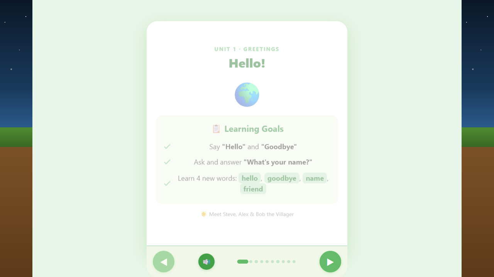
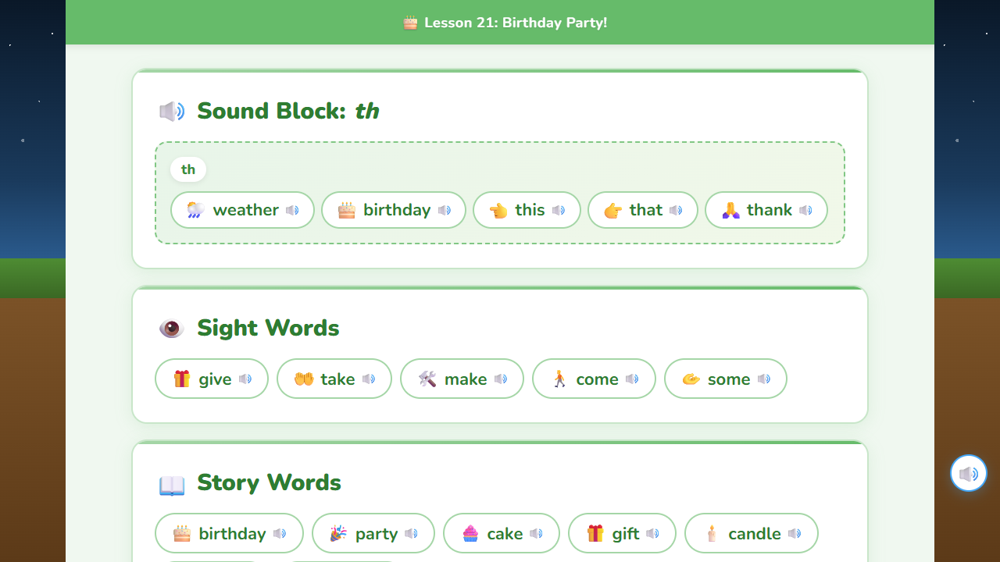
| 排名 | 页面 | 评分 | 等级 |
|---|---|---|---|
| 1 | math-22 | 26 | 合格 |
| 2 | math-24 | 25 | 合格 |
| 3 | math-04 | 24 | 合格 |
| 4 | math-10 | 24 | 合格 |
| 5 | math-21 | 24 | 合格 |
| 6 | math-03 | 23 | 待改进 |
| 7 | math-01 | 22 | 待改进 |
| 8 | math-11 | 22 | 待改进 |
| 9 | math-15 | 19 | 需重做 |
| 10 | math-16 | 19 | 需重做 |
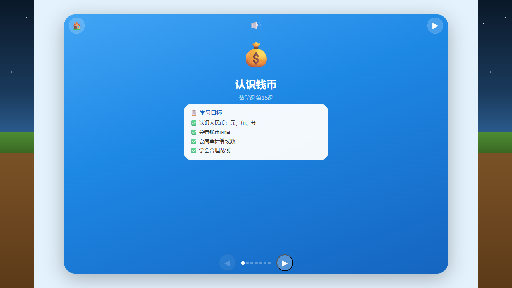
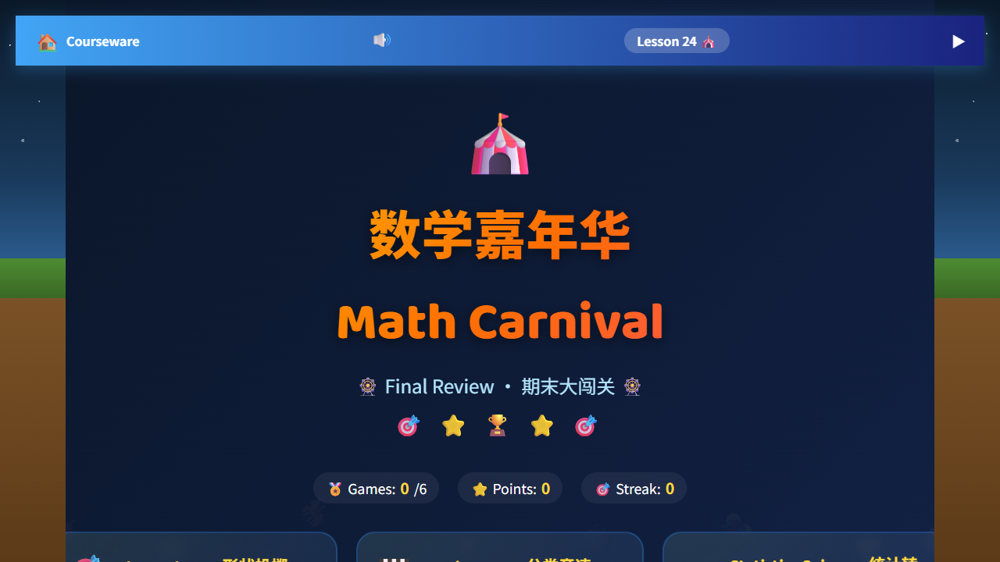
| 排名 | 页面 | 评分 | 等级 |
|---|---|---|---|
| 1 | chinese-03 | 30 | 满分 |
| 2 | chinese-13 | 30 | 满分 |
| 3 | chinese-23 | 30 | 满分 |
| 4 | chinese-24 | 30 | 满分 |
| 5 | chinese-14 | 29 | 优秀 |
| 6 | chinese-01 | 27 | 优秀 |
| 7 | chinese-05 | 26 | 合格 |
| 8 | chinese-07 | 25 | 合格 |
| 9 | chinese-10 | 23 | 待改进 |
| 10 | chinese-18 | 23 | 待改进 |
| 11 | chinese-02 | 21 | 待改进 |
| 12 | chinese-magic | 20 | 待改进 |
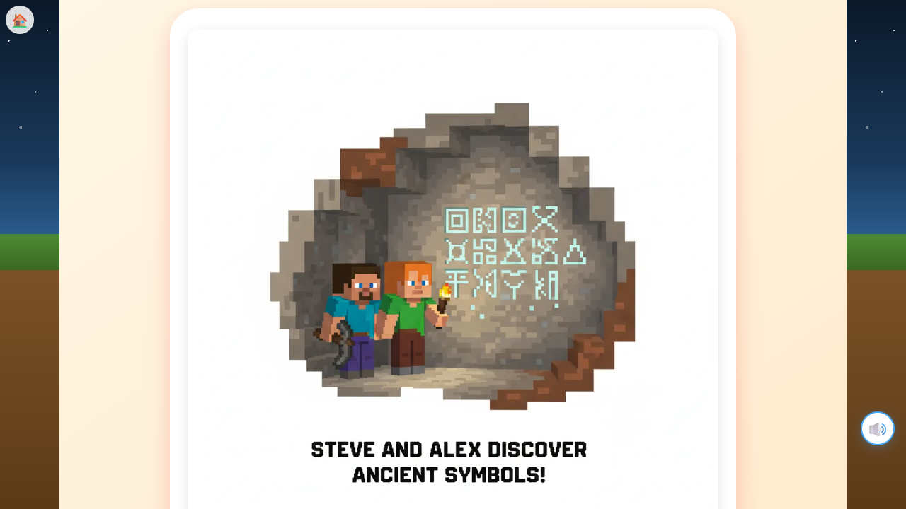
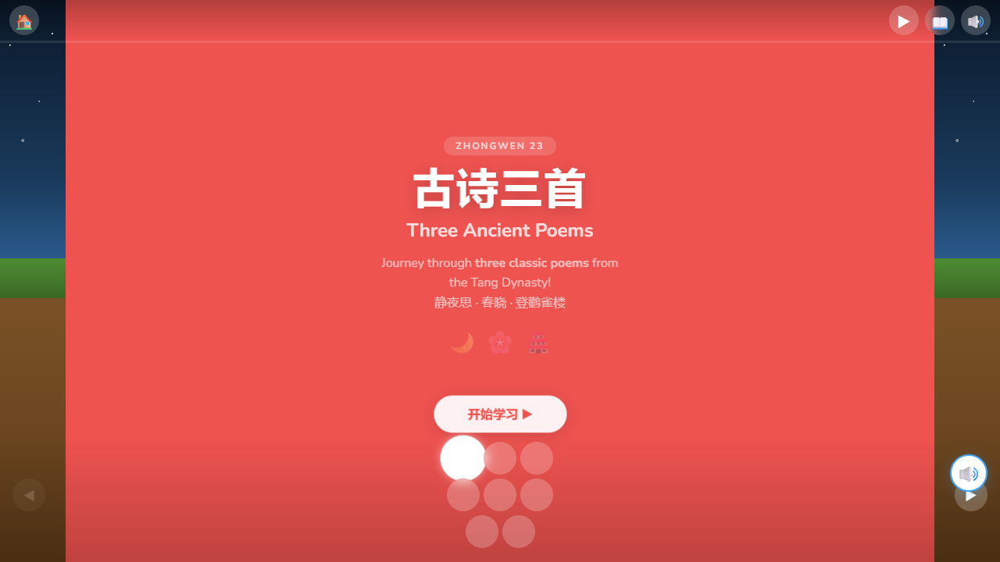
| 排名 | 页面 | 评分 | 等级 |
|---|---|---|---|
| 1 | twinkle-twinkle | 28 | 优秀 |
| 2 | old-macdonald | 27 | 优秀 |
| 3 | abc-song | 26 | 合格 |
| 4 | five-little-monkeys | 26 | 合格 |
| 5 | head-shoulders | 26 | 合格 |
| 6 | itsy-bitsy-spider | 26 | 合格 |
| 7 | wheels-on-bus | 26 | 合格 |
| 8 | london-bridge | 26 | 合格 |
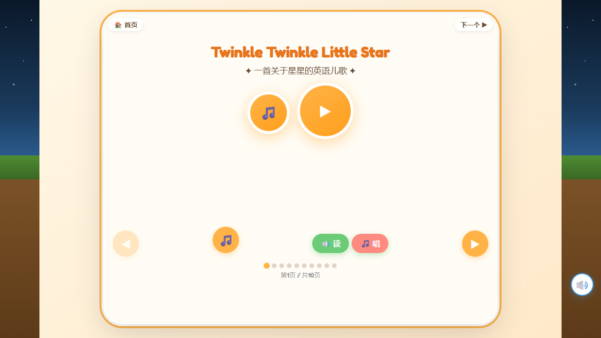
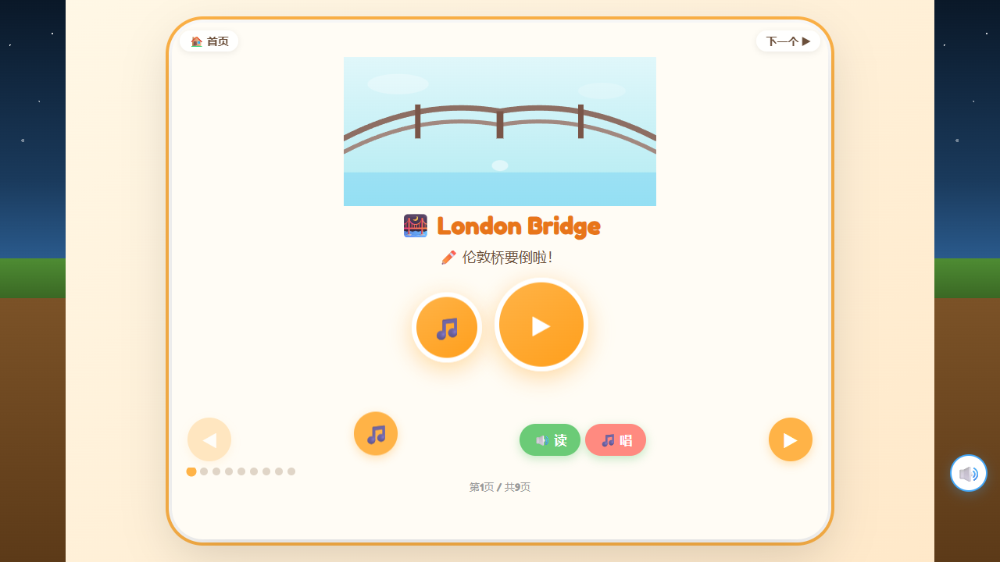
| 排名 | 页面 | 评分 | 等级 |
|---|---|---|---|
| 1 | story-ocean | 24 | 合格 |
| 2 | story-forest | 24 | 合格 |
| 3 | story-kingdom | 24 | 合格 |
| 4 | story-animal | 23 | 待改进 |
| 5 | story-adventure | 23 | 待改进 |
| 6 | story-treasure | 23 | 待改进 |
| 7 | story-fairy | 23 | 待改进 |
| 8 | story-season | 23 | 待改进 |
| 9 | story-space-d1 | 20 | 待改进 |
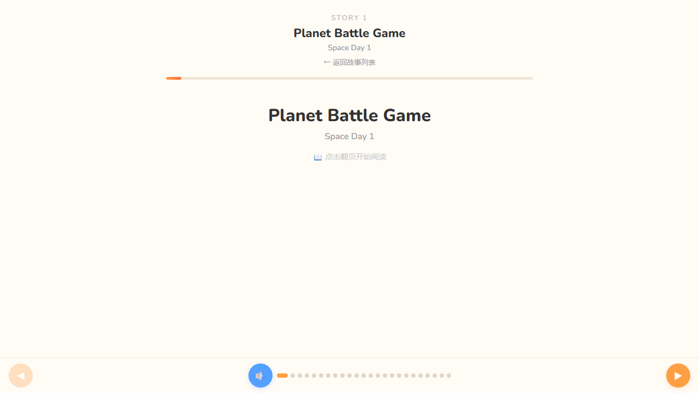
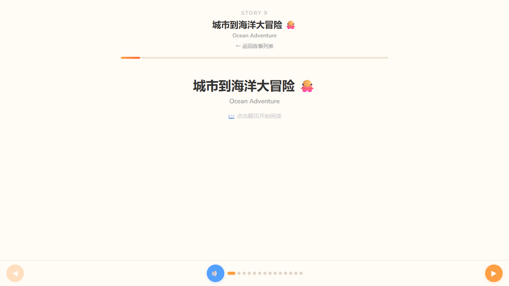
以下 8 个页面评分最低，存在严重的 UI/UX 问题，建议优先重做。
| 问题 | 严重度 | 描述 | 建议 |
|---|---|---|---|
| 导航一致性缺失 | 高 | 不同类别课件的导航栏位置、样式、返回逻辑不一致，用户切换时产生认知负担 | 建立统一的导航组件规范 |
| 页面过渡无动画 | 中 | 多数页面间切换生硬，缺乏过渡动画，对幼童用户体验不够友好 | 统一添加淡入淡出或滑动过渡 |
| 加载状态未处理 | 中 | 资源加载时缺少 loading 状态提示，可能造成用户困惑以为页面卡死 | 添加骨架屏或趣味加载动画 |
| 错误处理不完善 | 低 | 音频播放失败、网络异常等边界情况缺少友好提示 | 设计儿童友好的错误提示 |
| 问题 | 严重度 | 描述 | 建议 |
|---|---|---|---|
| 色彩体系不统一 | 高 | 各类别课件使用不同的色彩风格和饱和度，缺乏统一的品牌色彩体系 | 建立色彩规范（主色/辅色/功能色） |
| 字体层级混乱 | 中 | 标题、正文、提示文字的字号和字重缺乏统一标准，部分页面文字过小 | 制定 3 级字体规范（标题/正文/辅助） |
| 图标风格不一致 | 中 | 部分页面使用线性图标，部分使用面性图标，视觉语言不统一 | 统一为面性彩色图标风格 |
| 留白不足 | 低 | 低分页面普遍存在元素过于密集的问题，缺少呼吸空间 | 增加页面内边距和元素间距 |
| 问题 | 严重度 | 描述 | 建议 |
|---|---|---|---|
| 点击目标过小 | 高 | 部分按钮和可点击区域尺寸不足 44px，不符合儿童触控标准（最小 48px） | 所有可交互元素最小 48x48px |
| 缺少触觉/音效反馈 | 中 | 交互操作后缺乏即时的声音或振动反馈，降低儿童的操作确认感 | 关键操作添加音效反馈 |
| 手势操作不友好 | 中 | 拖拽、缩放等复杂手势未做儿童适配，容易误操作 | 简化为点击/滑动为主 |
| 进度反馈缺失 | 低 | 课件学习中缺少进度条或完成度提示，用户不知道自己学到哪了 | 添加可视化进度指示 |
以下模式在满分/高分页面中反复出现，建议作为全平台设计规范。
儿童绘本课件 UI/UX 全面审查报告 · 2026-05-31 · 共审查 59 个页面 · 12 张对比截图
Powered by Claude Code · 审查标准基于 Nielsen 儿童交互设计准则 + 幼教 UI 最佳实践